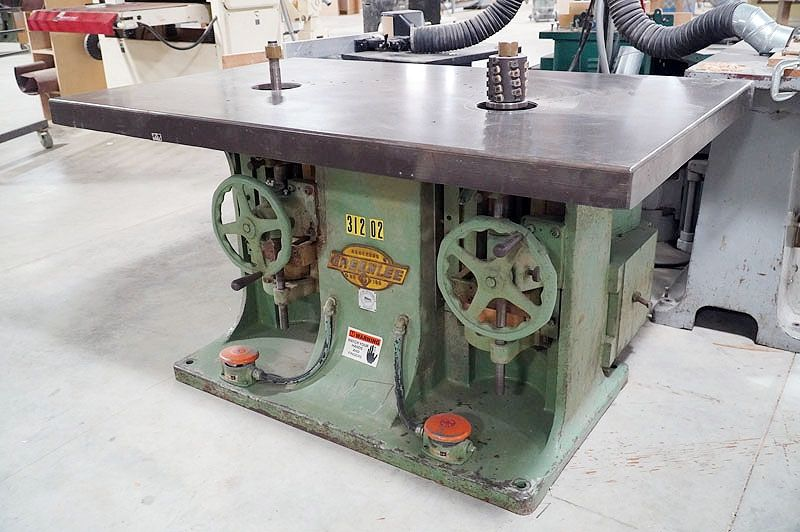
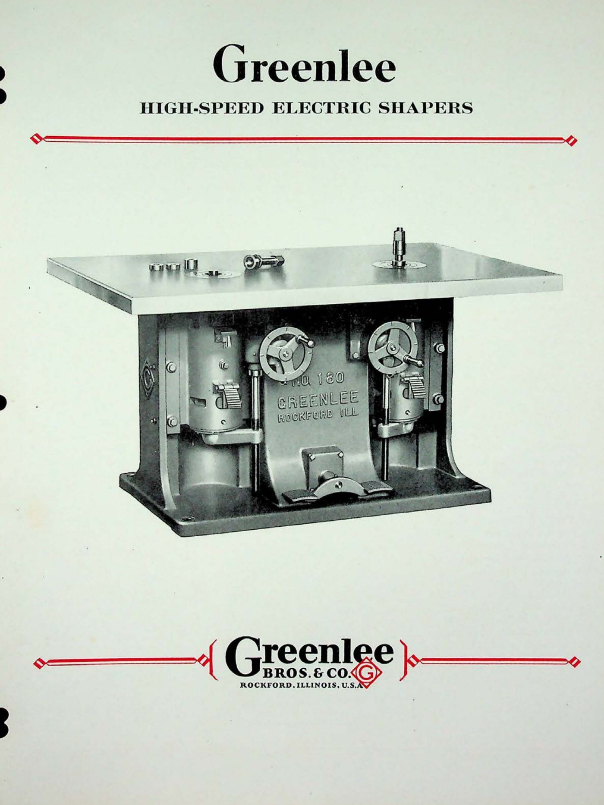

No. 180 Double-Spindle Shaper
Production shaping, two spindles · 100-Series · June 1967

The machine
A double-spindle shaper answers a problem every shaper hand knows: wood only cuts cleanly with the grain, and a curved workpiece changes grain direction halfway around. The 180 carries two spindles side by side, turning in opposite directions. When the grain turns against you on one spindle, you swap the work to the other — and you are cutting downhill again. No climb-cutting, no tear-out, no fighting the machine. It is a production answer: two of everything, so the work never has to wait.
The one in this collection
Serial 87801 was built in June 1967, in the last years Greenlee built for woodworkers, and it did not come alone. Two hundred serial numbers and two months later, the No. 165 single-spindle shaper followed it out of Rockford — a matched pair of high-speed machines, and they have stayed together ever since. In the collection they stand as the closing chapter: the final refinement of a machine the company had been perfecting since the 1890s.
From the Catalog

“The No. 180 Shaper is the most popular of the double-spindle machines… its size and spindle spacing makes it an all-around shaper for light, medium and heavy work in any class of shop.” Greenlee Bulletin No. 175-182 · November 1929
- Table
- 66″ × 42″
- Spindle centers
- 30″
- Net weight
- 3,000 lbs
The catalog shows the line as it stood in 1929; this machine is its 1967 descendant, and the family resemblance is unmistakable.
Catalog scan courtesy of VintageMachinery.org.
Through the Catalogs
The double-spindle shaper in the 1929 bulletin and the 1958 trade directory.
Every frame links to the full publication in the Paper Archive — scans courtesy of VintageMachinery.org.